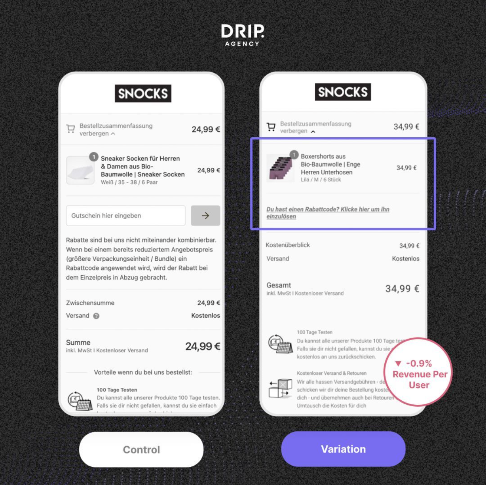
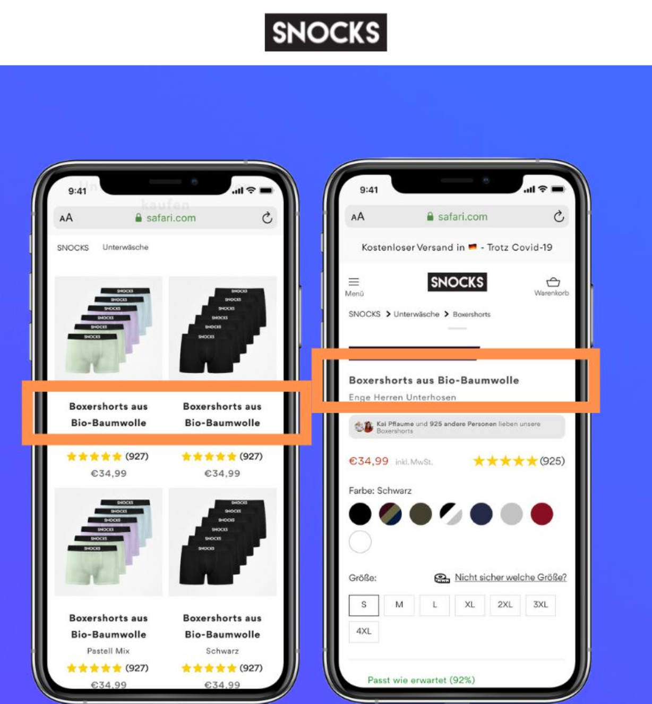
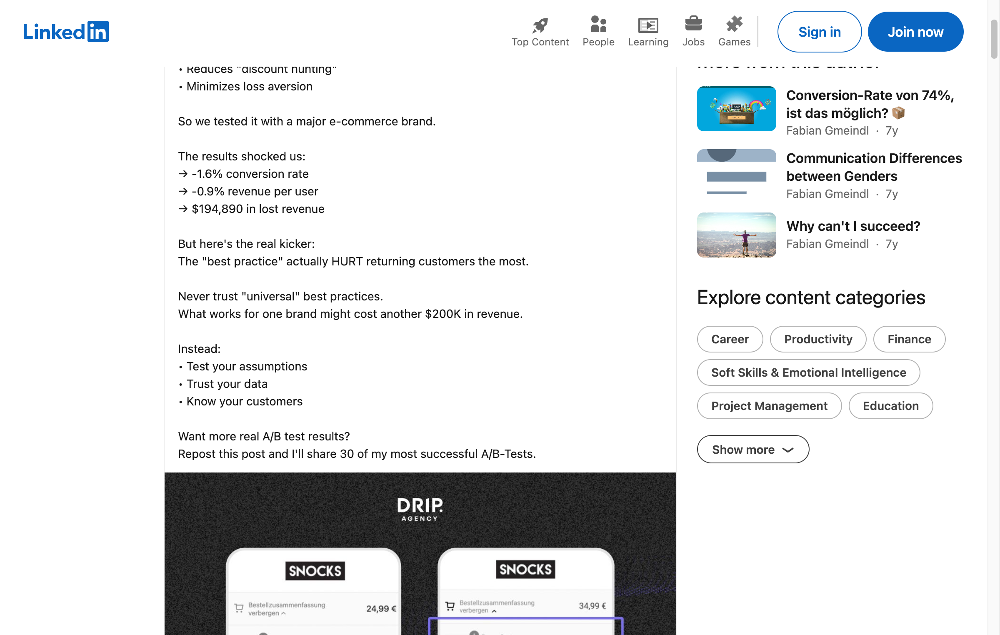
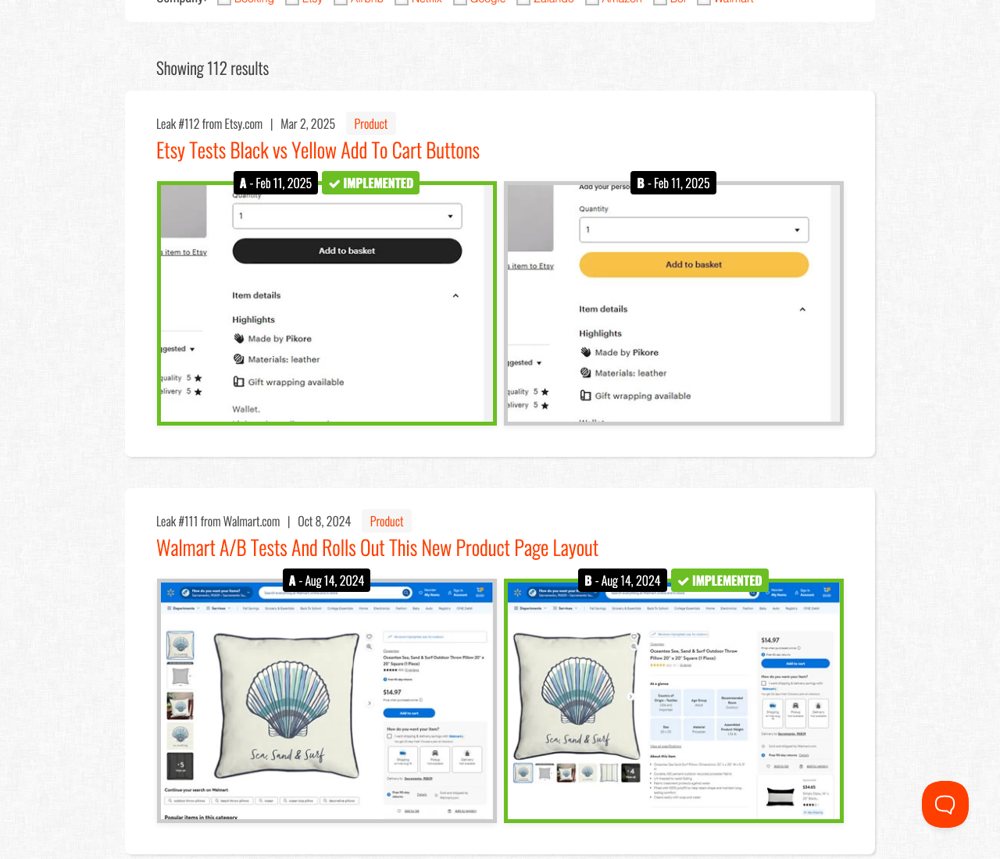
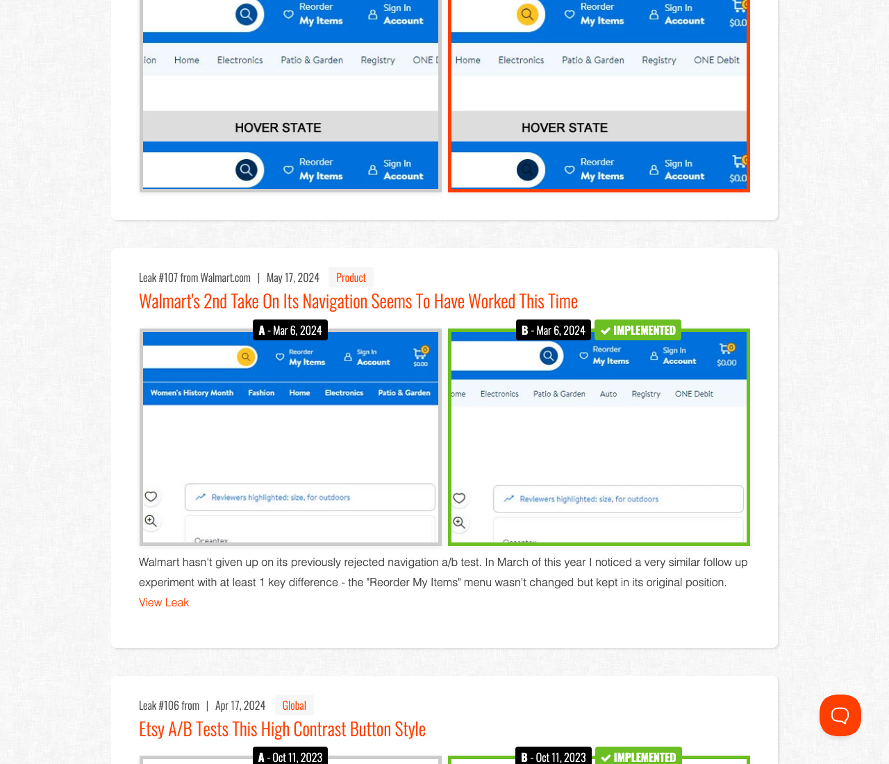
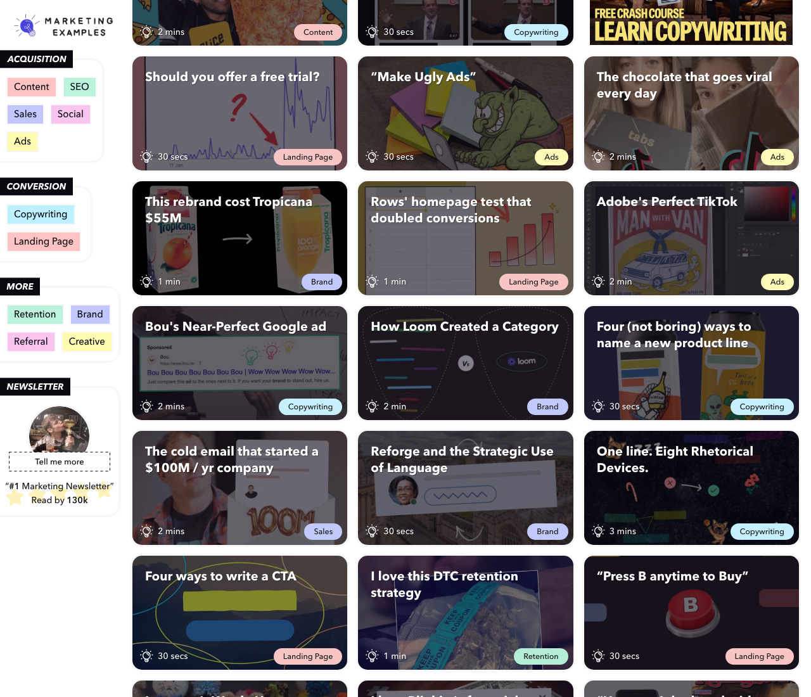
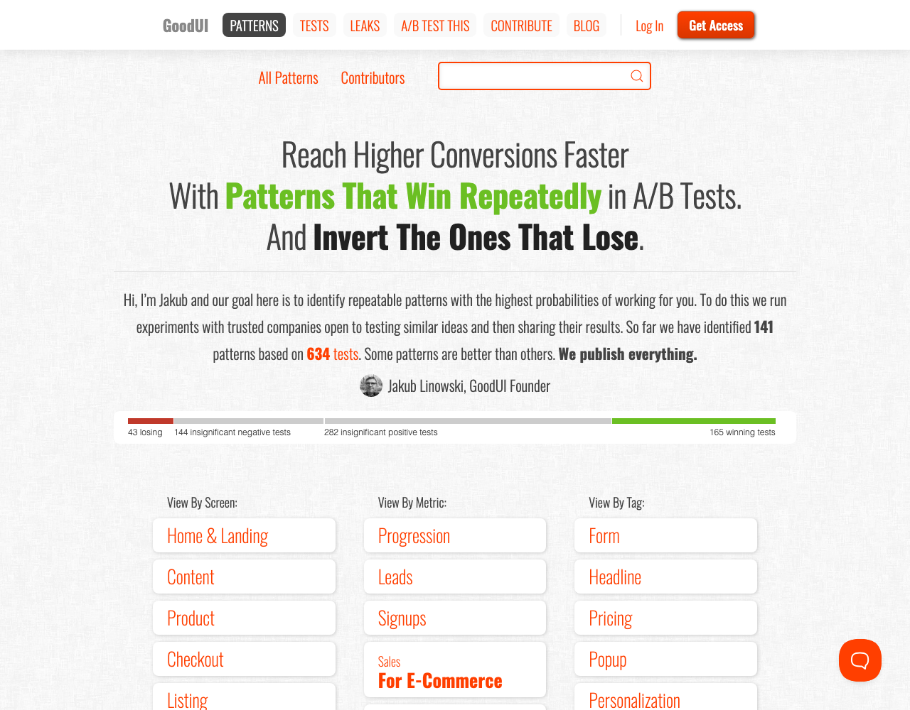

What the redesign of our result cards is based on: public sources that publish real A/B before/after visuals, what each one does well, and where to browse the LinkedIn native examples that sit behind a login.
Captured from public LinkedIn post pages (logged out, via the direct post URLs). These are from two of the three accounts this whole strategy references.

Fabian Gmeindl / DRIP Agency, SNOCKS checkout test (the post): dark textured background, agency logo top center, two phone screenshots with Control and Variation label pills below (variation colored), a purple box highlighting the changed element, and the result as a small circular badge on the image. The hook and the big numbers live in the post text ("We tested a CRO best practice and it lost $194,890"), not on the creative. Note: it's a LOSING test, and it's one of his best performing posts.

Samuel Hess, SNOCKS product title test (the post): bright single color background, brand logo on top, full iPhone device frames, and orange boxes highlighting the same element on both screens so your eye compares exactly one thing. No result number on the image at all: the outcome is the payoff for reading the post, which is why it pulled 54 comments.

How the text and creative divide the work: the post text carries the numbers and the story (results block, lesson, CTA "repost and I'll share 30 tests"), while the image only shows the two variants and where to look. Text sells, image shows.

Why it matters: the industry's reference format for before/after test visuals. Two screenshots side by side, labeled A and B with dates, and the implemented winner marked with a colored border. No captions, no arrows, no explanation on the image itself. The screenshots are tightly cropped to the tested element (Etsy's add to cart button, Walmart's product layout).

Stolen for our cards: the green border marking the winner, A/B tags directly on the screenshots, and crops so tight the difference is findable in about a second.

Why it matters: every tile carries exactly one idea in one line of large type over one image ("This rebrand cost Tropicana $55M", with just two juice cartons). No stat blocks, no logos rows, no footers. Stolen for our cards: a single number with a single label as the entire text layer, and the discipline to move everything else into the post copy.

Why it matters: GoodUI's credibility comes from publishing losers alongside winners (43 losing, 165 winning on the front page). It's the same honesty posture as our "trending, not proven" chips and the flat test post in week 7.
LinkedIn sits behind a login wall, so these can't be captured automatically. Open these in your own browser; all three post before/after test creatives regularly: